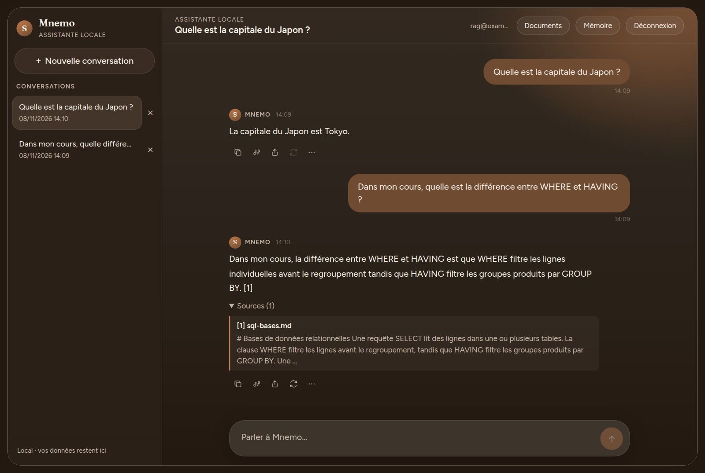

M

No. 01In bloom · in development
Mnemo
Artificial Intelligence · Local assistant
A private assistant that runs on my own machine: it remembers what I choose to share, answers from my documents, and can use tools without being trusted to.
React · TypeScript · Node · PostgreSQL + pgvector · Ollama
- The problemMost assistants send everything to someone else’s servers. I wanted one that stays local, remembers me, and reads my own documents.
- The ideaA local model with a memory I can read and edit, answers that cite the document and page they came from, and tools whose permissions are decided by the server, never by the model.
- The buildReact front end with streaming replies, a Node API, PostgreSQL with pgvector for hybrid search, local OCR for scanned PDFs, and an agent that chains tools within a step budget.
- The challengeMy first embedding model could not tell a relevant question from an unrelated one in French, so I measured two models on 26 questions and replaced it. Then I audited the whole app with my own scanner: 35 injected requests to delete a memory, all stopped by the server.
- The lessonPut the guarantees in code, not in the prompt. The model I choose changes the audit score, from 74 to 36 out of 100, but not what the server allows.